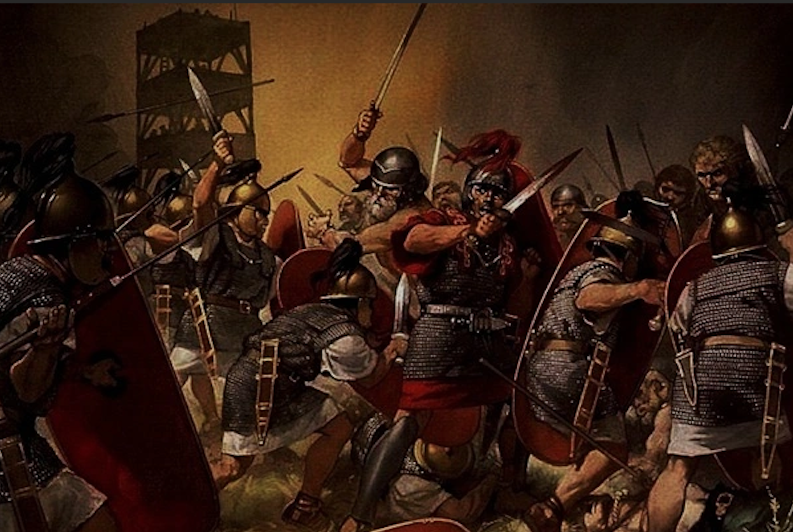

|
|
The Rise | The Fall | Registration | FAQ |
|---|
Explore the fascinating journey of the Thrasian Empire, from its rise to its eventual decline. Dive into the detailed accounts and learn more about one of the most intriguing civilizations in history.
As the empire grew, so did its complexities. The central authority began to face challenges from powerful regional governors and nobles who sought more autonomy. Corruption within the bureaucracy weakened the administrative efficiency, leading to dissatisfaction among the populace and increasing unrest.
The empire’s vast expansion strained its resources. Overextension led to difficulties in managing distant territories, and economic troubles began to surface. The once-thriving trade routes were threatened by external raiders and internal mismanagement, causing a significant downturn in the empire’s economic stability.
Several military defeats against rival states and incursions by barbarian tribes weakened the empire’s control over its territories. The loss of key battles eroded the once-feared military might of the Thrasains. Additionally, revolts and uprisings in various regions further destabilized the empire, as local leaders seized the opportunity to assert their independence.
The Thrasain Empire suffered from a series of succession crises, with weak and ineffective rulers failing to address the mounting issues. The lack of strong leadership exacerbated the internal divisions and hastened the decline.
Ultimately, the combination of internal strife, economic collapse, military defeats, and ineffective governance led to the fragmentation of the Thrasain Empire. It broke apart into smaller, independent states, each vying for power and control. The once-great empire, which had dominated the region for centuries, became a collection of fractured territories, marking the end of its dominance and the beginning of a new era in the region’s history.
The Thrasain Empire suffered from a series of succession crises, with weak and ineffective rulers failing to address the mounting issues. The lack of strong leadership exacerbated the internal divisions and hastened the decline.